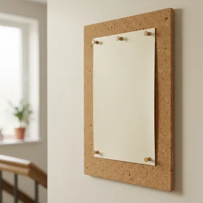

deutschoderwas · Sprechclub · Dienstag, 8. September · Einzelstunde
Wie viel Ordnung braucht der Mensch?
Die einen räumen jeden Abend auf, die anderen finden alles im Stapel. Heute streiten wir darüber — auf Deutsch, mit Argumenten.
Dein Niveau
Gleiches Thema, andere Sätze. B1 nennt Argumente, B2 wägt ab und räumt Gegenargumente ein.
Zwei Schränke, zwei Menschen
Schaut euch das Bild an. Sieht dein Schrank so aus? Und was sagt das über dich — oder gar nichts?
Räumst du jeden Tag auf oder einmal in der Woche?
Gibt es bei dir zu Hause eine Ecke, die immer unordentlich ist?
Wer hat dir das Aufräumen beigebracht?
Sagt Ordnung wirklich etwas über einen Menschen aus — oder ist das ein Vorurteil?
Gibt es Berufe, in denen Unordnung ein Vorteil ist?
Wo hört Ordnung auf und wo fängt Kontrolle an?
🗣️ Sprecht reihum: „Bei mir sieht es meistens …“ · „Unordnung stört mich vor allem, wenn …“ · „Aufräumen fange ich immer an, sobald …“
Der leere Raum — Ruhe oder Kälte?
Manche werden erst ruhig, wenn nichts mehr herumsteht. Andere finden genau das ungemütlich. Beides ist eine Haltung, keine Krankheit.
Fühlst du dich in einem leeren Zimmer wohler oder unwohler?
Kann zu viel Ordnung anstrengend sein? Für wen?
Was würdest du niemals wegwerfen, obwohl du es nie benutzt?
👀 Zu zweit: Beschreibt euch gegenseitig euren Schreibtisch — ohne ihn zu bewerten. Erst danach sagt der andere, was er darüber denkt. Trifft es zu?
Zwölf Wörter für Ordnung und Chaos
Sagt jedes Wort laut — und gleich den Beispielsatz hinterher. Erst dann bleibt es hängen.
die Ordnung
„Bei mir muss Ordnung herrschen, sonst kann ich nicht denken.“
💡 Ordnung halten, Ordnung schaffen, in Ordnung bringen. Und „alles in Ordnung?“ heißt einfach: Geht es dir gut?
🌪️
das Chaos
„In meinem Zimmer herrscht ein ziemliches Chaos.“
💡 Immer ohne Plural. Gesprochen sagt man auch: ein Saustall — aber nur über den eigenen.
aufräumen
„Ich räume immer erst auf, wenn Besuch kommt.“
💡 Trennbar: Ich räume das Zimmer auf. Und im Perfekt: Ich habe aufgeräumt.
🗑️
aussortieren
„Einmal im Jahr sortiere ich alle Kleider aus, die ich nicht getragen habe.“
💡 Aussortieren heißt: raussuchen und weggeben. Wegwerfen ist der letzte Schritt, nicht der erste.
der Keller
„Im Keller steht seit fünf Jahren ein Karton, den niemand öffnet.“
💡 Der Keller ist der ehrlichste Ort der Wohnung: Dort steht, was man nicht wegwerfen kann und nicht braucht.
die Unterlagen
„Meine Unterlagen sind in Ordnern — sonst finde ich nichts wieder.“
💡 Nur im Plural. Gemeint sind alle wichtigen Papiere: Verträge, Zeugnisse, Rechnungen.
der Papierkram
„Den Papierkram schiebe ich immer bis zum letzten Tag.“
💡 Umgangssprachlich und leicht genervt. Offiziell: der Schriftverkehr oder die Verwaltung.
der Stapel
„Auf meinem Schreibtisch wächst ein Stapel, den ich nicht mehr ansehe.“
💡 stapeln ist das Verb dazu. Wer stapelt, hat nicht aufgeräumt — nur sortiert verschoben.

der Überblick
„Ich brauche keine Ordnung, ich brauche nur den Überblick.“
💡 den Überblick behalten oder verlieren. Das ist nicht dasselbe wie Ordnung — man kann im Chaos den Überblick haben.
🔁
die Gewohnheit
„Aufräumen ist bei mir keine Entscheidung mehr, sondern Gewohnheit.“
💡 aus Gewohnheit etwas tun. Und: sich etwas angewöhnen oder abgewöhnen.
🎯
der Perfektionismus
„Sein Perfektionismus macht ihn langsam, nicht besser.“
💡 Meistens leicht kritisch gemeint. Wer nur ordentlich ist, ist gründlich — das klingt freundlicher.
🕊️
loslassen
„Das Schwerste beim Aufräumen ist nicht das Sortieren, sondern das Loslassen.“
💡 Trennbar und sehr beliebt: etwas loslassen heißt auch, sich innerlich davon zu trennen.
💡 Spiel: Verdeckt die Wörter. Jeder zieht eine Karte und muss damit sagen, ob er eher zu Ordnung oder eher zu Chaos neigt.
Drei Lager — und ihre besten Argumente
Erst die drei Haltungen, die es in jeder Gruppe gibt. Darunter drei Streitpunkte, jeweils mit dem stärksten Satz von beiden Seiten.
🧹
Die Ordentlichen
Außen aufgeräumt heißt innen ruhig.
Ich kann erst arbeiten, wenn der Tisch leer ist.
🌀
Die Kreativen
Im Chaos entstehen Verbindungen.
Ich finde alles — solange keiner aufräumt.
⚖️
Die Pragmatiker
Ordnung nur da, wo sie Zeit spart.
Der Schreibtisch ja, der Kleiderschrank nicht.
✅ Pro Ordnung
Wer Ordnung hält, verliert weniger Zeit mit Suchen — das sind über ein Jahr gerechnet ganze Tage.
Das stärkste ArgumentEs ist messbar und nicht moralisch. Deshalb lässt es sich schwer wegdiskutieren.
❌ Contra Ordnung
Ordnung kostet auch Zeit. Wer täglich eine halbe Stunde aufräumt, spart selten eine halbe Stunde Suchen.
Der KonterDreht das Zeitargument einfach um. Wer eine Zahl nennt, muss mit einer Gegenzahl rechnen.
✅ Pro Ordnung
In einer Wohngemeinschaft ist Ordnung keine Vorliebe, sondern Rücksicht.
Das stärkste ArgumentVerschiebt die Frage vom Geschmack zum Zusammenleben. Da wird Widerspruch schwierig.
❌ Contra Ordnung
Rücksicht gilt für gemeinsame Räume. Mein Zimmer geht niemanden etwas an.
Der KonterZieht eine klare Grenze zwischen gemeinsam und privat — das überzeugt fast immer.
✅ Pro Ordnung
Kinder lernen Ordnung nur, wenn sie sie sehen.
Das stärkste ArgumentErziehung schlägt Geschmack. Ein Argument, das über die eigene Person hinausgeht, wiegt schwerer.
❌ Contra Ordnung
Kinder lernen vor allem, dass Streit über Socken normal ist. Auch das sehen sie.
Der KonterNimmt dasselbe Argument und dreht es. Wer so kontert, wirkt souverän statt trotzig.
Drei Schritte, die im Deutschen fast immer funktionieren:
1. Zustimmen, was stimmt: „Da hast du recht, das kostet wirklich Zeit.“
2. Einschränken: „Allerdings gilt das nur für gemeinsame Räume.“
3. Eigenes Argument: „Ich sehe das eher so, dass …“
Wer zuerst zustimmt, wird zuhören gelassen. Wer sofort widerspricht, bekommt nur den nächsten Widerspruch zurück.
⚖️ Kurzübung: Jeder wählt ein Lager — ordentlich, kreativ, pragmatisch — und verteidigt es in genau drei Sätzen. Danach muss jeder das Lager verteidigen, das er gerade angegriffen hat.
Die vier Bausteine einer guten Diskussion
Meinung sagen, begründen, einräumen, widersprechen. Wer diese vier hat, kommt in jeder Debatte durch.
1 · 💬 Meinung sagen Ich finde, dass …Meiner Meinung nach …Für mich ist wichtig, dass …
So klingt esMeiner Meinung nachbraucht man Ordnung nur da, wo mehrere wohnen.
2 · 🧱 Begründen … weil …Der Grund ist, dass …Zum Beispiel: …
So klingt esIch räumejeden Abend auf, weil ich morgens keine Zeit habe.
3 · 🤝 Einräumen Das stimmt, aber …Da hast du recht, trotzdem …Klar, nur …
So klingt esDas stimmt, aber bei mirfunktioniert es anders.
4 · ✋ Widersprechen Das sehe ich anders.Da bin ich nicht deiner Meinung.Ich glaube nicht, dass …
So klingt esDassehe ich anders — Ordnung sagt nichts über einen Menschen.
1 · 💬 Position beziehen Ich vertrete die Auffassung, dass …Aus meiner Sicht spricht vieles dafür, dass …Ich neige zu der Ansicht, dass …
So klingt esAus meiner Sichtspricht vieles dafür, Ordnung als Rücksicht zu verstehen, nicht als Charakterfrage.
2 · 🧱 Belegen Das zeigt sich daran, dass …Ein Beispiel dafür wäre …Untersuchungen deuten darauf hin, dass …
So klingt esDaszeigt sich daran, dass Konflikte fast immer in gemeinsamen Räumen entstehen.
3 · 🤝 Zugeständnis machen Zwar …, aber …Ich gebe zu, dass …Das mag zutreffen, dennoch …
So klingt esZwarkostet Aufräumen Zeit, aber Suchen kostet Nerven.
4 · ✋ Sachlich widersprechen Da muss ich widersprechen.Ich halte das für zu kurz gedacht.Das trifft in dieser Allgemeinheit nicht zu.
So klingt esDastrifft in dieser Allgemeinheit nicht zu — es kommt auf den Raum an.
Verb worum es geht Zeit und Menge Höflichkeit
🗣️ Sofort anwenden: Nehmt eine Frage aus dem Einstieg und antwortet mit allen vier Bausteinen am Stück — Meinung, Grund, Zugeständnis, Widerspruch. Vier Sätze, mehr nicht.
Vier Gespräche — zwei Runden
Runde 1: Lest den Dialog zu zweit laut. Runde 2: Auf den Knopf tippen — B verschwindet, und ihr antwortet selbst. Die Regieanweisung bleibt als Hilfe stehen.
Dialog 1 · „Die Küche in der WG“
Zweiter Tag in Folge steht das Geschirr vom Vorabend in der Spüle.
A
Du, die Küche sieht wieder aus wie ein Schlachtfeld.
B
Da hast du recht, das war gestern meine Schuld.
🗣️ Gib zuerst zu, was stimmt. Das nimmt dem Gespräch die Spitze.tippen = Hilfe zeigen
A
Es ist halt nicht das erste Mal.
B
Stimmt. Nur bin ich vorgestern nach zwölf heimgekommen — das hilft dir trotzdem nicht, ich weiß.
🗣️ Nenn deinen Grund, gib aber sofort zu, dass er das Problem nicht löst.tippen = Hilfe zeigen
A
Und wie machen wir das jetzt?
B
Mein Vorschlag: Was in der Küche steht, wird am selben Abend gespült. Mein Zimmer bleibt dafür meine Sache.
🗣️ Mach einen konkreten Vorschlag — und zieh dabei die Grenze zwischen gemeinsam und privat.tippen = Hilfe zeigen
A
Damit kann ich leben.
Dialog 2 · „Der Keller der Eltern“
Deine Mutter möchte den Keller ausräumen. Dort stehen deine alten Sachen.
A
Kannst du im Herbst mal deine Kartons durchgehen? Da steht Zeug von 2009.
B
Ich weiß. Ehrlich gesagt schiebe ich das seit Jahren vor mir her.
🗣️ Sei ehrlich, statt eine Ausrede zu suchen. Das entwaffnet.tippen = Hilfe zeigen
A
Wir könnten es zusammen machen, dann geht es schneller.
B
Zwar würde es dann schneller gehen, aber ich möchte selbst entscheiden, was weg kann.
🗣️ Räum den Vorteil ein — und sag trotzdem, was dir wichtig ist. Mit zwar … aber.tippen = Hilfe zeigen
A
Das nehme ich dir doch nicht weg.
B
Gut. Dann mache ich im Oktober zwei Samstage frei — und du kochst.
🗣️ Nenn einen konkreten Zeitraum. Ohne Datum passiert nichts.tippen = Hilfe zeigen
A
Abgemacht.
Dialog 3 · „Der Schreibtisch im Büro“
Neue Regel im Team: Abends muss jeder Tisch leer sein. Du hältst nichts davon.
A
Ab Montag gilt clean desk. Abends nichts mehr auf dem Tisch.
B
Darf ich fragen, was der Gedanke dahinter ist?
🗣️ Frag zuerst nach dem Grund, bevor du widersprichst.tippen = Hilfe zeigen
A
Einheitliches Bild, und die Reinigung kommt besser durch.
B
Das mit der Reinigung leuchtet mir ein. Beim einheitlichen Bild bin ich anderer Meinung.
🗣️ Trenn die beiden Gründe — einem stimmst du zu, dem anderen nicht.tippen = Hilfe zeigen
A
Und warum?
B
Weil ich morgens zwanzig Minuten damit verliere, alles wieder aufzubauen. Können wir es für drei Wochen testen und dann messen?
🗣️ Ein Grund, eine Zahl, ein konkreter Vorschlag mit Frist.tippen = Hilfe zeigen
A
Das ist fair. Machen wir.
Dialog 4 · „Auch der Bildschirm ist ein Zimmer“
Deine Freundin sieht deinen Desktop: 340 Dateien, alle auf dem Startbildschirm.
A
Wie findest du hier irgendwas wieder?
B
Ich suche gar nicht, ich tippe die ersten Buchstaben ein.
🗣️ Erklär dein System, statt dich zu entschuldigen.tippen = Hilfe zeigen
A
Aber ist das nicht anstrengend?
B
Für mich nicht. Ich brauche keine Ordnung, ich brauche nur den Überblick.
🗣️ Nenn den Unterschied zwischen Ordnung und Überblick — das ist dein bestes Argument.tippen = Hilfe zeigen
A
Und wenn die Festplatte kaputtgeht?
B
Da hast du recht, das wäre ein Problem. Ordner helfen dagegen aber auch nicht — eine Sicherung schon.
🗣️ Gib den Punkt zu und zeig, dass er zu einem anderen Thema gehört.tippen = Hilfe zeigen
🎭 Und jetzt ihr: Spielt Dialog 3 noch einmal — aber diesmal darf B nicht widersprechen, sondern muss die Regel verteidigen. Wie fühlt sich die andere Seite an?
🧩 Einräumen mit obwohl, trotzdem, zwar
Wer zugibt, was stimmt, gewinnt die Diskussion. Dafür gibt es im Deutschen drei Wege — und drei verschiedene Satzstellungen.
Alle drei sagen dasselbe: Etwas gilt, und trotzdem gilt das Gegenteil auch. Der Unterschied liegt nur in der Grammatik. obwohl leitet einen Nebensatz ein und schickt das Verb ans Ende. trotzdem steht im Hauptsatz und zieht das Verb direkt hinter sich. zwar … aber verbindet zwei ganz normale Hauptsätze.
🔗obwohlObwohl es Zeit kostet, räume ich auf.
▾
↩️trotzdemEs kostet Zeit. Trotzdem räume ich auf.
▾
⚖️zwar … aberEs kostet zwar Zeit, aber ich räume auf.
▾
🎯Alle dreiGleiche Aussage, andere Wortstellung.
NebensatzObwohl es Zeit kostet,
Verbräume
Subjektich
Restjeden Abend auf.
Die drei Wege im Überblick
Dieselbe Aussage, dreimal gebaut. Präg dir die Stellung des Verbs ein — daran hängt alles.
🔗
obwohl
Nebensatz, Verb ganz hinten
Obwohl ich müde bin, räume ich auf.
↩️
trotzdem
Position 1, Verb kommt sofort
Ich bin müde. Trotzdem räume ich auf.
⚖️
zwar … aber
zwei Hauptsätze, ganz normal
Ich bin zwar müde, aber ich räume auf.
obwohl + Verb ans Endetrotzdem + Verb direkt danachzwar … , aber …dennoch (gehobener als trotzdem)allerdings (einschränkend)
Die Falle: trotzdem ist kein obwohl
Beide heißen auf vielen Sprachen dasselbe. Im Deutschen bauen sie den Satz völlig verschieden.
✅ Richtig
Obwohl es Zeit kostet, räume ich auf.
Warumobwohl leitet einen Nebensatz ein: Das Verb rutscht ans Ende.
❌ Falsch
Obwohl es kostet Zeit, räume ich auf.
MerkenIm Nebensatz steht das Verb nie auf Position 2. Es gehört ganz nach hinten.
✅ Richtig
Es kostet Zeit. Trotzdemräume ich auf.
Warumtrotzdem besetzt Position 1, also folgt sofort das Verb — dann erst das Subjekt.
❌ Falsch
Es kostet Zeit. Trotzdem ich räume auf.
MerkenKlassischer Fehler: Nach einem Wort auf Position 1 kommt immer erst das Verb.
✅ Richtig
Es kostet zwar Zeit, aber ich räume trotzdem auf.
Warumzwar steht im Mittelfeld, aber verbindet ganz normal zwei Hauptsätze.
❌ Falsch
Zwar es kostet Zeit, aber …
MerkenSteht zwar auf Position 1, muss auch hier das Verb direkt folgen: „Zwar kostet es Zeit …“
🧱 Bau die Sätze selbst
Tippe die Teile in der richtigen Reihenfolge an. Danach auf „prüfen“.
📖 Und jetzt im Zusammenhang
Ein kurzer Text über einen Samstagvormittag. Wähle in jeder Lücke das passende Wort.
Frag dich nur eines: Wie viele Sätze willst du bauen?
Ein Satz mit Nebensatz → obwohl. Verb ans Ende, Komma nicht vergessen.
Zwei getrennte Sätze → trotzdem oder dennoch am Anfang des zweiten. Verb sofort danach.
Zwei verbundene Hauptsätze → zwar … aber. Kein Verb wandert.
Wenn du im Gespräch stockst: Nimm zwar … aber. Das ist die einfachste Stellung von den dreien — und klingt trotzdem erwachsen.
🎭 Drei Streitfälle
Zu zweit. Jeder bekommt eine Position — auch wenn er sie privat nicht teilt. Zwei Minuten, dann tauschen.
1 · Die gemeinsame Küche
A wohnt seit einem Monat in der WG und räumt nie auf. B hat es satt. Findet eine Regel, mit der beide leben können.
Das ist mein ZimmerIch mache es späterDa hast du rechtMein Vorschlag ist …
In gemeinsamen Räumen gilt …Ich möchte dir nichts vorschreibenZwar …, aber …Lass es uns drei Wochen testen
✅ Eine gute Runde enthältBeide unterscheiden zwischen gemeinsamen und privaten Räumen — und am Ende steht eine Regel mit Frist, nicht nur ein Gefühl.
2 · Aufräumen im Büro
A führt clean desk ein, B arbeitet seit zehn Jahren mit Stapeln und ist gut darin. Argumentiert sachlich.
Es sieht besser ausAlle machen mitDas verstehe ichKönnen wir es testen?
Was ist das eigentliche Ziel?Das leuchtet mir ein, allerdings …Ich halte das für zu kurz gedachtMessen wir es doch
✅ Eine gute Runde enthältA nennt ein echtes Ziel statt „so ist es eben“. B widerspricht nur dem Teil, dem er wirklich widerspricht.
3 · Der Karton im Keller
A möchte den Keller räumen, B hängt an alten Sachen. Es geht nicht um Platz, es geht ums Loslassen.
Das brauchst du nicht mehrWir machen es zusammenIch verstehe dichNimm dir Zeit
Ich gebe zu, dass …Für mich hängt daran mehr als PapierIch möchte selbst entscheidenSetzen wir ein Datum
✅ Eine gute Runde enthältA drängt nicht, B nennt den wahren Grund. Am Ende steht ein Datum — sonst passiert nichts.
🎴 Sprechkarten
Zieh eine Karte und sprich mindestens vier Sätze am Stück.
Deine Aufgabe
Tippe auf den Knopf.
⏱️ Die 90-Sekunden-Challenge
Ein Ort, anderthalb Minuten. Beschreibe, wie es dort bei dir aussieht — und ob dich das stört oder nicht.
Dein Wort
der Kleiderschrank
1:30
Geh den Ort in vier Schritten durch, dann trägt sich die Zeit von selbst:
1. Was steht dort, was man sofort sieht?
2. Was liegt dort seit Wochen und gehört nicht hin?
3. Wie fühlst du dich, wenn du hineinkommst?
4. Würdest du etwas ändern — und warum eigentlich nicht?
Und wenn ein Wort fehlt: beschreib es. „So ein Ding, in das man Papiere steckt“ ist besser als eine Pause.
⏱️ Spielregel: In jeder Runde muss ein obwohl, ein trotzdem oder ein zwar … aber vorkommen. Die Gruppe hört mit.
✅ Sitzt es schon?
8 Fragen. Tippe auf deine Antwort — die Erklärung kommt sofort.
✍️ Lückentext
Wähle in jeder Lücke das passende Wort.
📣 Danach laut: Lest die vier Bausteine noch einmal am Stück vor — Meinung, Grund, Zugeständnis, Widerspruch. Erst wenn es flüssig klingt, sitzt es.
📮 Deine Hausaufgabe bis nächste Woche
Vier kleine Aufgaben, zusammen etwa 25 Minuten. Tippe eine an, wenn du sie geschafft hast.
💡 Warum das hilft: Über Alltagsdinge zu streiten ist die beste Übung fürs freie Sprechen — man weiß, was man sagen will, und muss nur die Wörter finden.
0 von 0 Aufgaben geschafft.
So sieht derselbe Gedanke dreimal aus:
obwohl: „Obwohl Aufräumen Zeit kostet, mache ich es jeden Abend.“
trotzdem: „Aufräumen kostet Zeit. Trotzdem mache ich es jeden Abend.“
zwar … aber: „Aufräumen kostet zwar Zeit, aber ich mache es jeden Abend.“
Achte auf das Verb: bei obwohl ganz hinten, nach trotzdem sofort, bei zwar … aber gar keine Bewegung.
So klingen Zugeständnisse, die trotzdem widersprechen:
„Da haben Sie recht, allerdings gilt das nur für gemeinsame Räume.“
„Das mag zutreffen, dennoch halte ich die Regel für zu starr.“
„Zwar spart Ordnung Suchzeit, aber sie kostet Pflegezeit.“
„Ich gebe zu, dass mein System für andere unlesbar ist — für mich ist es das nicht.“
„Das ist ein berechtigter Einwand. Er trifft aber ein anderes Problem.“
Der Aufbau ist immer gleich: erst der Punkt der Gegenseite, dann das Scharnier (allerdings, dennoch, aber), dann dein Argument.
📬 Abgabe: Schick deine Sprachnachricht bis Sonntag 18 Uhr in die Gruppe. Wir hören zwei davon gemeinsam an — freiwillig, versteht sich.
🔜 Ab dem 14. September geht es in Strang C jede Woche um so eine Streitfrage — mit Teil 1 und Teil 2. Wer heute dabei war, kennt den Aufbau schon.